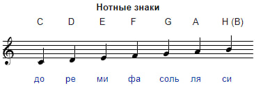

В настоящее время приняты следующие названия нот: До Ре Ми Фа Соль Ля Си.
Другая распространённая система обозначения нот — буквенная: ноты от до до си обозначаются буквами латинского алфавита C, D, E, F, G, A, H.

Существует также и английская система обозначения (см. рисунок выше), в которой ноту си обозначают буквой B.
В русских сборниках гитарных аккордов также нередко встречается английская система.
Используются буквенные обозначения при настройке гитары тюнером, а
так же для обозначения аккордов, например А - это аккорд "ля"
материалы рекомендуется записывать , для лучшей продуктивности
Начать